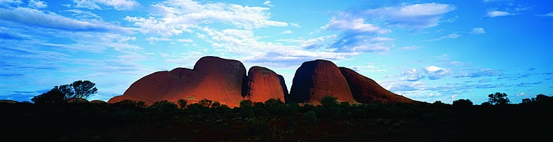

Здесь вы найдете наши рассказы о природе, истории и людях далекой и необычной страны, занимающей отдельный континент. И, хотя первые европейцы прибыли сюда всего лишь два века назад, Австралия быстро догнала в своем развитии передовые страны Европы и Америки.
А ведь природные условия страны не назовешь прекрасными. В центре ее расположены выжженные солнцем пустыни и буш, а леса жмутся к побережьям. Но страна богата природными ресурсами и ее населяют энергичные, талантливые и доброжелательные люди – «ози», как они себя называют. Это они за короткое время построили красивые города на берегах океана, проложили автомобильные и железные дороги от одного края континента до другого, насадили сады, возделали землю и создали свободное демократическое общество. Об этих людях и об их замечательной стране – Австралии мы и будем рассказывать читателям этого сайта.
Вопросы? Комментарии?Пишите нам по адресу iskra.rytch@gmail.com